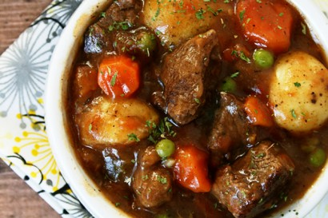

Hearty Beef Stew

A warm, comforting beef stew to serve on a cold winter`s day.
Ingredients:
- 1 Tablespoon Olive Oil
- Tablespoon Butter
- 2 pounds Stewing Beef
- 4 cups Beef Stock
- 1 whole Large Onion, Peeled And Diced
- 1 can (796 ML Size) Diced Tomatoes
- 2 cloves Garlic, Minced
- 12 whole Button Mushrooms, Sliced
- 2 stalks Celery, Sliced
- 3 whole Large Carrots, Peeled And Sliced
- 1 whole Bay Leaf
- 1 teaspoon Salt, Or To Taste
- 1 teaspoon Black Pepper, Or To Taste
- 1 teaspoon Dried Thyme
- 1 teaspoon Dried Basil
- 1 Tablespoon Dried Parsley
- 1 Tablespoon Granulated Sugar
- 24 whole Mini Potatoes, Halved Or 3 Large Russet Potatoes, Peeled And Cubed
- 1 cup Frozen Peas
- ⅓ cups Wate
- 4 Tablespoons Cornstarch
Now let's get to the instructions:
- Heat a frying pan on medium high heat until it is really hot. Add the olive oil and butter. Add some of the stewing beef pieces,
without crowding the pan, and resist the urge to move the pieces around because you want the meat to caramelize (take on a nice,
dark brown color) before turning. Fry on at least two sides, but the pieces do not need to be cooked all the way through.
Remove the cooked beef pieces from the pan and repeat until all the pieces are browned. Add the meat into a large pot.
- De-glaze the frying pan by adding 1 - 2 cups of beef stock to the pan.
Use a rubber spatula to gently scrape off any of the beef bits and juices from the bottom of the frying pan. Add this liquid to the large pot.
- Into the large pot, add the onion, tomatoes, garlic, mushrooms, celery, carrots, the remainder of the beef stock, bay leaf, salt, pepper, thyme,
basil, parsley, and sugar. Add enough water so that the vegetables and meat are almost covered.
Cover the pot and bring the stew to a boil over medium-high heat.
Reduce the heat to low and simmer for 1-1/2 to 2 hours, stirring occasionally.
- Add the potatoes and frozen peas. Increase the heat and bring the stew back up to a boil. Cover and reduce the heat back to low and simmer for an additional hour.
- In a small dish, mix together the cold water and cornstarch to make a slurry.
Add the slurry to the pot and simmer for 5 to 10 minutes to thicken. Discard the bay leaf before serving.